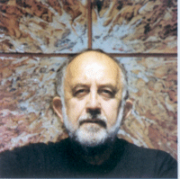

|

|
JEVTIC Slobodan dit Slobo est né
en 1934 à Valjevo, Serbie
Etudes d'architecture à la
Faculté de Belgrade ; diplôme de
scénographie à l'Académie des
Arts Appliqués de Belgrade.
Il vit en France depuis 1965 et en
Auvergne depuis 1969.
|
Son œuvre présente de multiples facettes,
depuis la décoration de films jusqu'à la
création de carton pour une tapisserie d'Aubusson
(Opus 1010). Il a peint sa vision du Cosmos. Mais ce qui
touche le plus de monde ce sont ses murs peints en "
trompe-l'œil". L'art dans la rue, à la portée
de tout-un-chacun, c'est de la
générosité ! Merci à Slobo et
à ses commanditaires, la ville est une galerie
ouverte à tous, l'art va au devant des gens !
|